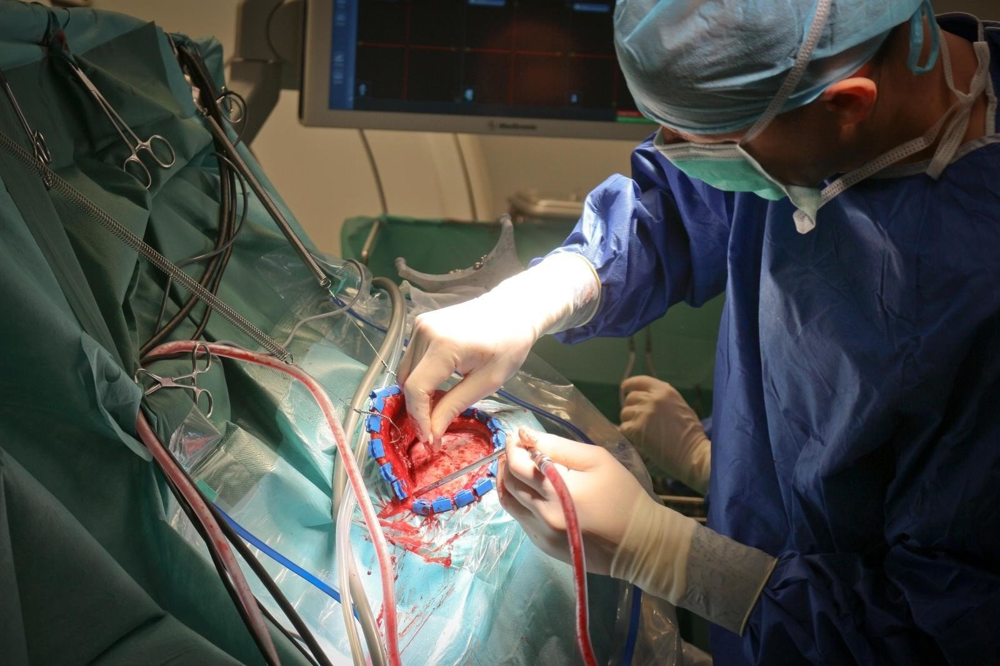
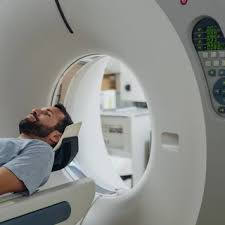
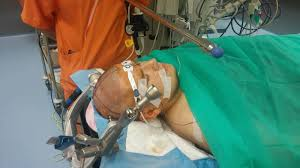
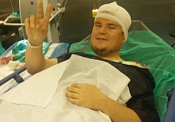
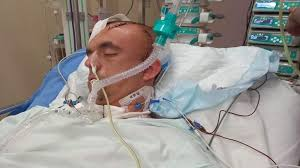

Przygotowanie do operacji neurochirurgicznych
Operacja usunięcia guza mózgu
Pacjent przechodzi szczegółowe badania obrazowe, takie jak rezonans magnetyczny oraz tomografia komputerowa, aby określić dokładną lokalizację guza.
Należy przeprowadzić konsultację neurologiczną oraz anestezjologiczną w celu oceny ogólnego stanu zdrowia pacjenta.
Pacjent powinien być na czczo przez co najmniej 8 godzin przed operacją oraz unikać przyjmowania niektórych leków zgodnie z zaleceniami lekarza.


Operacja kraniotomii
Przed operacją pacjent musi przejść badania laboratoryjne, takie jak morfologia krwi i krzepnięcie, aby uniknąć ryzyka powikłań.
Specjalista neurochirurgiczny ocenia anatomię czaszki oraz dobiera optymalną technikę operacyjną.
W dniu operacji pacjent powinien zgłosić się do szpitala zgodnie z wyznaczonym harmonogramem i przygotować się na pobyt pooperacyjny na oddziale intensywnej terapii.


Operacja tętniaka mózgu
Przed operacją przeprowadza się angiografię, która pozwala dokładnie zobrazować położenie tętniaka i zaplanować zabieg.
Pacjent powinien unikać leków wpływających na krzepnięcie krwi oraz stosować się do wszystkich zaleceń lekarza prowadzącego.
W zależności od rodzaju operacji (klipsowanie tętniaka lub embolizacja) pacjent może wymagać hospitalizacji na kilka dni oraz monitorowania funkcji neurologicznych.

